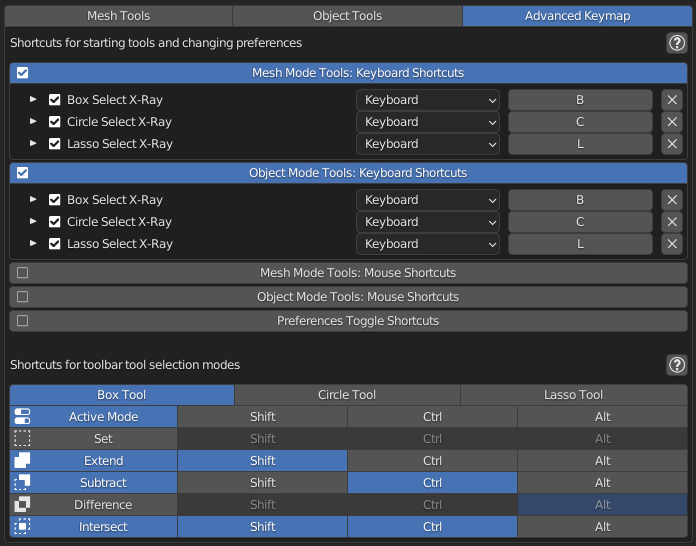

Shortcuts for starting tools and changing preferences
Here are mouse and keyboard shortcuts for starting x-ray selection tools and toggling their preferences.
Deactivating shortcut header here will completely remove keys below it from blender keyconfig, so keyconfig won't be cluttered with inactive keys.
By default, tools use preferences from Mesh Tools and Object Tools tabs in addon preferences. But you can configure preferences separately for individual shortcuts. To do this expand a shortcut and check Override Global Properties (1). Then you can change shortcut preferences independently of global ones (2)(3).
Shortcuts for tool selection modes
This section allows to set up keys that change selection mode when held down before using a box, lasso or circle xray tool in the toolbar. Deactivating selection mode here will remove its shortcut from xray selection tool.
Active mode corresponds to current selection mode in the blender header or properties: